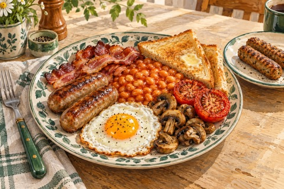

← Viikko 2 · Britannia
Lauantai / Aamiainen
Englantilainen aamiainen
Kananmunia, papuja, kasviksia ja paahtoleipää. Kahdelle lihaa, yhdelle kasvismakkaraa.

Ainekset
Määrät yhteensä 3 annokseen, myös lisukkeisiin ja mahdolliseen kasvisversioon. Vesi mainitaan valmistusohjeessa.
- Kananmunat3 kpl
- Porsaan raakamakkara200 g
- Pekoni100 g
- Kasvismakkara100 g
- Valkoiset pavut tomaattikastikkeessa400 g
- Herkkusienet250 g
- Tomaatti300 g
- Leipä180 g
- Voi20 g
- Rypsiöljy (myös uppopaistoon)15 ml
- Mustapippuri¼ tl
Valmistus
Lämpötilat ovat kiertoilmauunille. Käytä tavallisessa uunissa noin 20 °C korkeampaa lämpötilaa.
- Lämmitä kiertoilmauuni 190 asteeseen. Laita porsaanmakkarat ja pekoni yhdelle pellille ja kasvismakkarat erilliselle pienelle pellille. Kypsennä pakkausten ohjeiden mukaan. Raakamakkaroihin kuluu yleensä 20–25 minuuttia; tarkista vähintään 75 °C:n sisälämpötila 30 sekunnin ajan.
- Puolita tomaatit ja viipaloi sienet. Paista erillisellä pannulla 10 ml:ssa öljyä 8–10 minuuttia ja mausta mustapippurilla. Kuumenna pavut kattilassa.
- Paista kananmunat lopussa 5 ml:ssa öljyä haluttuun kypsyyteen. Paahda ja voitele leivät.
- Jaa kananmunat, pavut, sienet, tomaatit ja leivät kolmelle lautaselle. Lisää kahdelle porsaanmakkaraa ja pekonia, yhdelle kasvismakkaraa.
Kypsymisaika riippuu laitteista ja ainesten koosta. Kypsennysohjeet (englanniksi): tarkista ohjeessa mainittu sisälämpötila puhtaalla paistomittarilla.